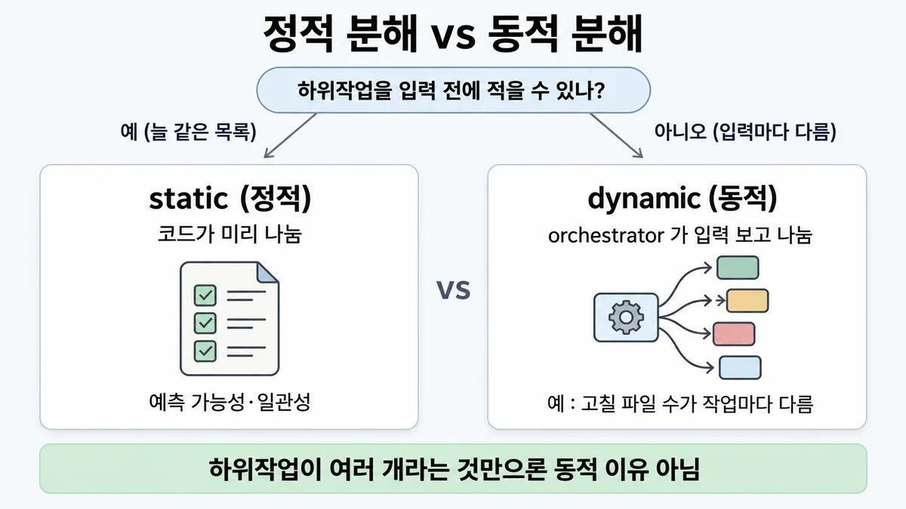
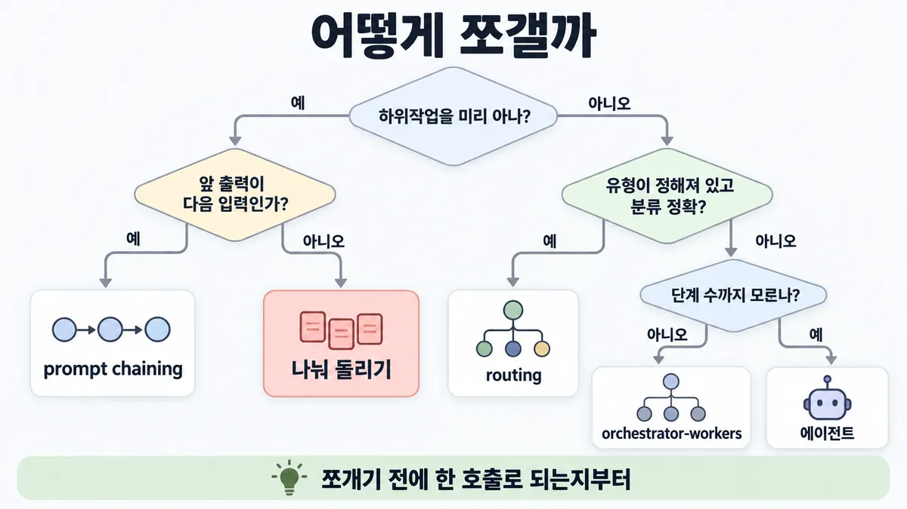
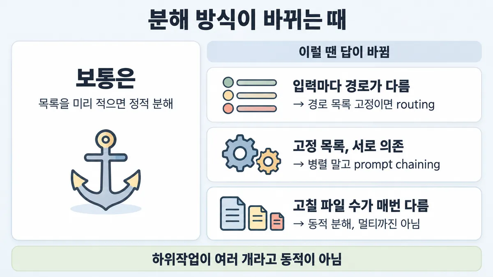

◆ static vs dynamic decomposition
표시가 없는 문장은 공식 문서에서 확인한 내용이에요. 다른 표시는 읽는 법
왜 배우나 — 시험이 요구하는 것
시험 목표 1.5 복잡한 문제 쪼개기 · D1 설계 17%Apply decomposition techniques for complex problem solving
이 개념으로 푸는 판단 (할 수 있어야 하는 것)
- 1.5① 미리 쪼갤 수 있나, 실행하며 쪼개야 하나? — 정적 분해(코드가 미리 나눔 — 체이닝·나눠 돌리기) vs 동적 분해(orchestrator 가 입력을 보고 나눔)
한눈에


ELI5
매일 똑같은 도시락을 싸는 가게와, 손님마다 주문이 다른 식당을 떠올려 보세요.
- 도시락 가게는 순서표를 붙여 두고 그대로 나눠 만들어요.
- 식당은 주방장이 주문서를 보고 그때그때 누구에게 뭘 시킬지 정해요.
- 매일 같은 도시락인데 주방장이 매번 새로 나누면 시간만 더 들어요.
- 이 쪽은 "순서표로 될 일인가, 주방장이 필요한 일인가"를 가르는 곳이에요.
개념 설명
원리
static decomposition(정적 분해)은 코드가 미리 나눈다
- 워크플로는 LLM 과 도구를 미리 정한 코드 경로로 엮는다. 잘 정의된 일에 예측 가능성과 일관성을 준다.
- prompt chaining(체이닝) : 앞 호출의 출력이 다음 호출의 입력이 된다. 사이에 코드 검사(gate)를 넣을 수 있다. 호출마다 쉬운 일로 만들어 정확도를 얻는다. 그 대신 지연(latency)을 쓴다.
- 나눠 돌리기(sectioning) : 서로 독립인 하위작업을 병렬로 돌린 뒤 코드가 모은다. 조각끼리 독립이어야 성립한다.
- routing(라우팅) : 입력을 분류해 전문 경로로 보낸다. 입력이 다양해 보여도 유형 목록이 정해져 있으면 여기서 끝난다.
dynamic decomposition(동적 분해)은 orchestrator 가 입력을 보고 나눈다
- orchestrator-workers : 중앙 LLM 이 입력을 보고 하위작업을 정하고, worker LLM 에 맡기고, 결과를 합친다.
- 나눠 돌리기와 모양이 같다. 차이는 하나다. 하위작업이 미리 정해졌느냐(정적), 입력이 정하느냐(동적)다.
- 공식 글에서는 여전히 "워크플로" 칸에 들어간다. 에이전트는 그다음 칸이다.
에이전트
- 단계 수조차 예측할 수 없고 경로를 미리 정해 둘 수 없는 열린 문제에 쓴다. LLM 이 자기 과정과 도구 사용을 스스로 정한다.
- 대가 : 비용이 오르고 오류가 쌓인다. 그래서 샌드박스에서 시험하고 가드레일을 둔다.
맨 앞에 서는 원칙
- 가장 단순한 것부터 시작한다. 검색(retrieval)과 예시를 붙인 단일 호출로 충분한 경우가 많다. 복잡도(쪼개기 단계를 더하는 것)는 필요할 때만 올린다.
핵심 질문 두 개
- 하위작업 목록을 입력을 보기 전에 적을 수 있나?
- 적을 수 있다면, 조각끼리 서로의 출력이 필요한가(prompt chaining), 독립인가(나눠 돌리기)?
규칙과 판단


갈림길
쪼개기 전에 [1.5①]
단일 호출
가장 단순한 것부터 시작한다. 복잡도는 필요할 때만 더한다
다음 물음 — 하위작업을 입력 전에 적을 수 있나?
미리 아나 [1.5①]
prompt chaining
사이에 코드 검사(gate)를 둔다. 지연(latency)을 감수하고 정확도를 얻는다
나눠 돌리기
sectioning 이다. 병렬로 돌린 뒤 코드가 모은다. 안전 조건은 조각끼리 독립인 것이다
routing
유형이 몇 가지로 정해져 있고 분류가 정확하면 routing(정적)으로 충분하다. 자세한 것은 ■ 워크플로 5패턴 에 있다
orchestrator-workers
orchestrator LLM 이 입력을 보고 나누고, 맡기고, 합친다
에이전트
열린 문제다. 멀티로 갈지는 ◆ 단일 vs 멀티 에이전트 에서 다룬다
흐름
그림 속 이름·금액·시간·토큰 수는 예시예요. 공식 한도·동작은 카드 본문 값이 기준.
장면 글로 보기
칸 : 입력 → decomposition → workers → 합치기
질문 : 하위작업을 입력 전에 적을 수 있나?
① 미리 정해지면 정적 ✓
- 시작 : 입력 — 쪽지 : 티켓: "배송이 2주째 / 안 와요, 화나네요"
- 나누기 : 입력 → decomposition : 코드가 미리 나눈다 — 쪽지 : 판정 목록 (코드에 고정) / 의도 · 감정 · 요약
- 돌리기 : decomposition → workers : 서로 독립이라 병렬로 돌린다 — 쪽지 : 호출 3개를 동시에
- 모으기 : workers → 합치기 : 코드가 모은다 — 쪽지 : { 의도: "배송 문의", / 감정: "화남", / 요약: "2주째 미배송" }
- 끝 : 잘 정의된 일에 예측 가능성과 일관성을 준다
② 입력마다 다르면 동적 ✓
- 시작 : 입력 — 쪽지 : 버그: "환불 버튼이 / 가끔 두 번 눌려요"
- 보기 : 입력 → decomposition : orchestrator LLM 이 보고 나눈다 — 쪽지 : orchestrator: / 고칠 파일 3개 / button.tsx · refund.ts / · refund.test.ts
- 맡기기 : decomposition → workers : 파일 수·내용이 작업마다 다르다 — 쪽지 : worker 3개에 / 파일 하나씩
- 모으기 : workers → 합치기 : orchestrator 가 합친다 — 쪽지 : 수정 3건 / orchestrator 가 / 하나로 합침
- 끝 : 입력마다 다르면 dynamic decomposition 이다
③ 미리 아는데 orchestrator 에게 ≠
- 시작 : 입력 — 쪽지 : 티켓: "배송이 2주째 / 안 와요, 화나네요"
- 보기 : 입력 → decomposition : 매 티켓 똑같은 세 판정을 orchestrator 가 나눈다 — 쪽지 : orchestrator / 호출 1번 더 / → 의도 · 감정 · 요약
- 맡기기 : decomposition → workers : 예측 가능성을 내준다 — 쪽지 : 늘 같은 세 판정인데 / 나누기를 매번 LLM 이 정함
- 끝 : 하위작업이 여러 개라는 것만으로는 동적 이유가 안 된다
규칙 원문 갈림 기준 (갈림길로 그린 규칙)
갈림 기준
기준은 하위작업을 입력 전에 적을 수 있나다
쪼개기 전에 : 검색(retrieval)과 예시를 붙인 단일 호출로 충분한 경우가 많다. 가장 단순한 것부터 시작하고, 필요할 때만 복잡도를 더한다
- 미리 정해져 있으면(늘 같은 목록) static decomposition(정적 분해)이다. 코드가 미리 나눈다. 워크플로는 잘 정의된 일에 예측 가능성과 일관성을 준다
- 앞 출력이 다음 입력이면 prompt chaining(체이닝)이다. 사이에 코드 검사(gate)를 둔다. 지연을 감수하고 정확도를 얻는다(호출마다 쉬운 일로 만든다)
- 서로 독립이면 나눠 돌리기(sectioning)를 하고 코드가 모은다. sectioning 은 parallelization 의 한 변형이다. 안전 조건은 조각끼리 독립인 것이다
- 입력마다 다르면 dynamic decomposition(동적 분해)이다. 곧 orchestrator-workers 다. orchestrator LLM 이 입력을 보고 나누고, 맡기고, 합친다. 예 : 코딩에서는 고칠 파일 수·내용이 작업마다 다르다
- 단계 수도 예측 못 하고 경로를 미리 정해 둘 수 없으면 에이전트다 (열린 문제). 자율에는 비용 증가와 오류 누적이 따른다. 그래서 샌드박스에서 시험하고 가드레일을 둔다
- 멀티로 갈지는 ◆ 단일 vs 멀티 에이전트 에서 다룬다
- 나눠 돌리기 vs orchestrator-workers : 모양은 비슷하다. 차이는 유연성이다. 하위작업이 미리 정해졌나(정적), 아니면 orchestrator 가 입력을 보고 정하나(동적)다
- 되는 곳은 워크플로로 한다. 에이전트는 정말 필요할 때만 쓴다 (Skilljar)
- 패턴 하나하나의 설명(routing(라우팅) · evaluator-optimizer(평가자-개선자)까지)은 ■ 워크플로 5패턴 에 있다
더 깊이 : 판단 규칙 · 상황 변수 (설명)
판단 규칙
| 조건 | 답 | 근거 |
|---|---|---|
| 단일 호출 + 검색 + 예시로 충분하다 | 쪼개지 않는다 | building-effective-agents "optimizing single LLM calls with retrieval and in-context examples is usually enough" |
| 하위작업이 고정이고 순서에 의존한다 | prompt chaining 을 쓴다 (gate 는 선택) | "easily and cleanly decomposed into fixed subtasks" |
| 하위작업이 고정이고 서로 독립이다 | 나눠 돌리기(sectioning)를 쓴다. parallelization 의 한 변형이다 | "Breaking a task into independent subtasks run in parallel." |
| 유형이 몇 가지로 정해져 있고 분류가 정확하다 | routing (정적) | "distinct categories that are better handled separately, and where classification can be handled accurately" |
| 하위작업이 입력마다 다르다 (고칠 파일 수 등) | orchestrator-workers | "subtasks aren't pre-defined, but determined by the orchestrator based on the specific input" |
| 단계 수도 모른다 · 경로를 미리 정해 둘 수 없다 | 에이전트 (+ 샌드박스·가드레일) | |
| 워크플로로 될 일인데 에이전트를 고려한다 | 워크플로 | Skilljar 287794 "only resort to agents when they are truly required" |
상황 변수
| 변수 | 값 | 답 쪽 | 등급 | 근거 |
|---|---|---|---|---|
| 하위작업 목록 | 매번 같다 | 정적 | 판단 규칙 2·3 | |
| 하위작업 목록 | 입력이 정한다 | 동적 (orchestrator-workers) | 판단 규칙 5 | |
| 입력 유형 | 소수로 닫혀 있다 · 분류가 정확하다 | routing | 판단 규칙 4 | |
| 조각끼리 관계 | 앞 출력이 뒤 입력이다 | prompt chaining | ||
| 조각끼리 관계 | 독립이다 | 나눠 돌리기 | ||
| 조각끼리 관계 | 공유 상태·잦은 동기화가 있다 | 같이 둔다 (쪼개지 않는다) | 업계 일반 | building-multi-agent-systems은 에이전트 분할 기준이다. 워크플로 조각에도 같은 원리로 본다 |
| 지연 여유 | 빡빡하다 | prompt chaining 단계 수를 줄인다 (prompt chaining 은 지연을 쓴다) | ||
| 중간 검사 | 필요하다 | prompt chaining + gate | ||
| 신뢰·통제(control) | 낮다 (되돌리기 어려운 동작) | 워크플로 쪽이다. 에이전트면 가드레일을 둔다 |
연습 문제
고객지원 티켓이 들어올 때마다 의도 분류 · 감정 · 요약 세 판정을 늘 똑같이늘 같은 목록 해야 한다. 세 판정은 서로의 결과를 쓰지 않는다서로 독립. 팀은 "하위작업이 여러 개니 orchestrator LLM 이 나누게 하자"고 한다. 어떻게 쪼개야 하나?
시험 대비
함정
- "하위작업이 여러 개니 orchestrator-workers 를 쓴다" 는 함정이다. 하위작업이 여러 개라는 것만으로는 동적 이유가 안 된다. 먼저 미리 아는지 묻는다. 미리 알면 정적이다
- 미리 아는 일(예 : 매 티켓 똑같은 세 판정인 의도 분류·감정·요약)을 orchestrator 에게 맡기는 것은 함정이다. orchestrator 호출이 더 들고 예측 가능성을 내준다 업계 일반 호출 수는 공식 숫자 없음
- "유연한 쪽이 항상 낫다" 는 함정이다. 잘 정의된 일에는 워크플로가 예측 가능하고 일관된다. 에이전트 자율에는 비용 증가와 오류 누적이 따른다
- "prompt chaining 으로 나누면 더 빠르고 싸다" 는 함정이다. prompt chaining 은 지연을 감수하고 정확도를 얻는다
- "병렬로 나누면 무조건 이득이다" 는 함정이다. 조각끼리 독립일 때만 이득이다
- "입력마다 다르니 무조건 동적이다" 는 함정이다. 유형이 몇 가지로 정해져 있고 분류가 정확하면 routing(정적)으로 충분하다. 자세한 것은 ■ 워크플로 5패턴 에 있다
- "orchestrator-workers 는 곧 멀티 에이전트다" 는 함정이다. 공식 글에서는 워크플로 패턴 하나다(중앙 LLM + worker LLM). 멀티 에이전트 비용 판단은 ◆ 단일 vs 멀티 에이전트 에서 다룬다
신호
"This workflow is ideal for situations where the task can be easily and cleanly decomposed into fixed subtasks."
"The main goal is to trade off latency for higher accuracy, by making each LLM call an easier task."
"subtasks aren't pre-defined, but determined by the orchestrator based on the specific input."
"Breaking a task into independent subtasks run in parallel."
"workflows offer predictability and consistency for well-defined tasks, whereas agents are the better option when flexibility and model-driven decision-making are needed at scale."
"Agents can be used for open-ended problems where it’s difficult or impossible to predict the required number of steps, and where you can’t hardcode a fixed path."
"always focus on implementing workflows where possible, and only resort to agents when they are truly required." (Skilljar)


더 깊이 : 뒤집히는 때 · 오답 재료 (설명)
뒤집히는 때
1. "입력마다 달라 보이는데" routing 으로 끝나는 때
- 조건 : 고객 문의가 일반 질문 · 환불 · 기술 지원으로 들어온다. 문의마다 처리 경로가 다르다.
- 판단 : 경로가 다를 뿐 경로 목록은 정해져 있다(3개). 분류가 정확하면 routing 이고, 이것은 정적이다. orchestrator-workers 는 하위작업 "목록 자체" 가 입력마다 바뀔 때 쓴다.
- 근거 : building-effective-agents (고객 문의 유형을 다른 프로세스·프롬프트·도구로 보내는 공식 예)
2. 고정 목록인데 병렬이 깨지는 때
- 조건 : 티켓 한 건에 "환불 가능 판정" 과 "답장 초안" 을 나눠 병렬로 돌린다.
- 판단 : 답장 초안이 환불 판정 결과를 알아야 한다. 그래서 독립이 아니다. sectioning(작업을 나눠 병렬 실행)이 아니라 prompt chaining(판정 다음 초안)이다. 목록이 고정이라는 것만으로 병렬이 되지는 않는다.
- 등급 : (독립 조건 · prompt chaining 정의). 이 예시 자체는 새로 만든 것이다
3. prompt chaining 이 지연 예산을 넘는 때
- 조건 : 3단계 prompt chaining 이다. 단계마다 약 1.2초가 걸려 합이 약 3.6초다. 약속한 응답 지연은 2.5초다.
- 판단 : prompt chaining 은 지연을 감수하고 정확도를 얻는 trade-off(절충)다. 그래서 예산을 넘으면 길은 셋이다. 단계 수를 줄인다. 독립인 단계는 병렬로 돌린다. 한 호출 안에서 thinking(사고)으로 처리한다. 자세한 것은 ■ decomposition 단위 정하기 · ■ 지연 줄이기 lever 에 있다.
- 등급 : 업계 일반 (단계당 시간은 가정 숫자 · 공식 숫자 없음). trade-off 방향 자체는 확인이다.
- 근거 : prompting-best-practices
4. 동적이 맞는데 멀티 에이전트까진 아닌 때
- 조건 : 요청마다 고칠 파일 수가 다른 버그 수정이다.
- 판단 : dynamic decomposition(orchestrator-workers)은 맞다. 하지만 코딩은 진짜 병렬 조각이 적다. 그래서 작업 가치가 멀티 에이전트 비용(채팅 대비 약 15배)을 넘기 어렵다. 비용 판단은 ◆ 단일 vs 멀티 에이전트 에서 한다.
- 근거 : multi-agent-research-system
오답 재료
| 오답 | 왜 끌리나 | 왜 틀리나 | 근거 |
|---|---|---|---|
| "하위작업이 여러 개니 orchestrator-workers" | 여러 개면 나눠 맡길 사람이 필요해 보인다 | 기준은 개수가 아니라 미리 아느냐다 | |
| "유연한 dynamic decomposition 이 항상 낫다" | 유연성은 좋은 말이다 | 잘 정의된 일에는 워크플로가 예측 가능하고 일관된다. 에이전트 자율은 비용이 오르고 오류가 쌓인다 | |
| "prompt chaining 으로 나누면 더 빠르고 싸다" | 작은 호출은 빠를 것 같다 | prompt chaining 은 지연을 쓰고 정확도를 얻는다 | |
| "고정 목록이면 전부 병렬" | 병렬은 빨라 보인다 | 조각끼리 독립일 때만 된다. 의존이 있으면 prompt chaining 이다 | |
| "입력마다 다르면 무조건 에이전트" | 입력이 다양하면 유연성이 필요해 보인다 | 셋으로 나뉜다. 유형 목록이 정해져 있으면 routing 이다. 하위작업만 다르면 orchestrator-workers 다. 단계 수조차 모를 때 에이전트다 | |
| "orchestrator-workers 를 쓰면 곧 멀티 에이전트 구축" | orchestrator·worker 가 여러 에이전트처럼 들린다 | 공식 글에서는 워크플로 패턴 하나다 | ("Workflow: Orchestrator-workers") |
| "처음부터 프레임워크로 에이전트를" | 엔터프라이즈다워 보인다 | LLM API 를 직접 쓰는 단순한 패턴부터 시작한다 | "We suggest that developers start by using LLM APIs directly" |
참고
함께 보기
더 깊이 : 출처 · 상태 · 미해결 (참고)
출처
- 가이드 목표 1.5 공식 시험 가이드 v1.0
- building-effective-agents
- Skilljar API 287794
상태
- 업계 일반 1줄 (orchestrator 호출 추가 비용)
미해결
- building-effective-agents 는 2024-12 글이다. 머리에 "도구 생태계는 바뀌었다" 주석이 있다. 패턴·판단 기준은 그대로라고 본다(추론). 지금 문서에서 같은 기준을 다시 확인한 곳은 prompting-best-practices(prompt chaining 조건)뿐이다.
- "미리 아는 일을 orchestrator 에게 맡기면 orchestrator 호출이 더 든다" 는 공식 숫자·문장이 없다(업계 일반).
- 이 글은 한국어판이 없어 영어 원문만 대조했다.
- ■ 워크플로 5패턴 카드는 다른 작성자 몫이다. 제목을 브리프 제안대로 가리킨다. 확정 제목이 다르면 이 카드 "개념"·"갈림 기준"·"함정" 줄을 맞춰야 한다.
- 목록 1.5① 의 영어 신호 두 문장은 원문에서 찾았다. 못 찾은 인용은 없다.